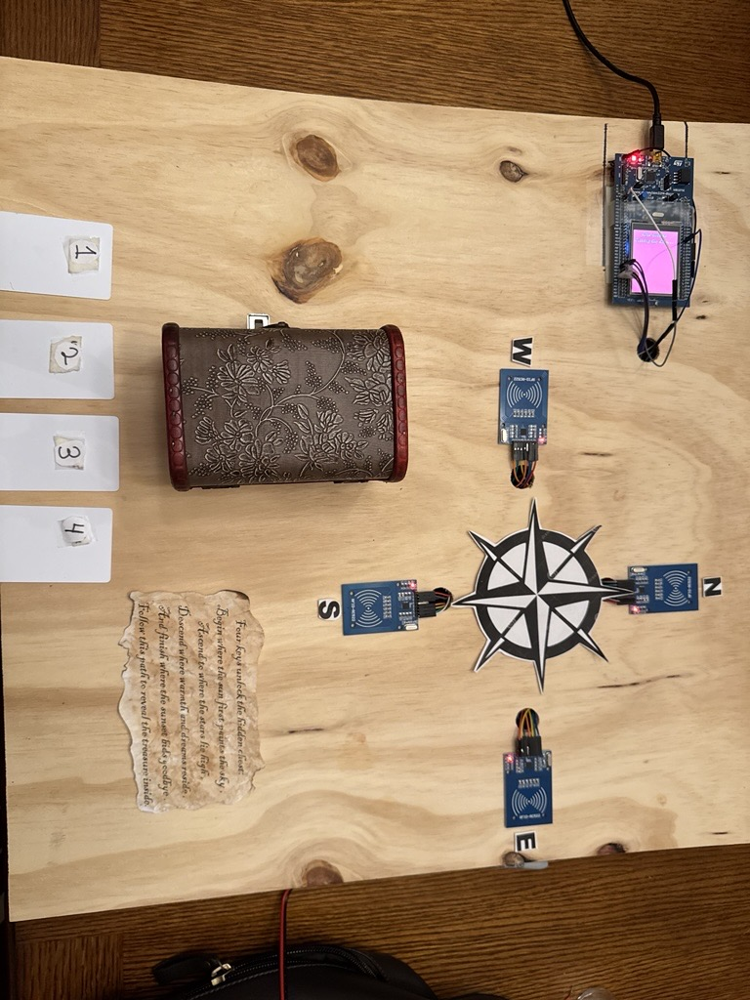
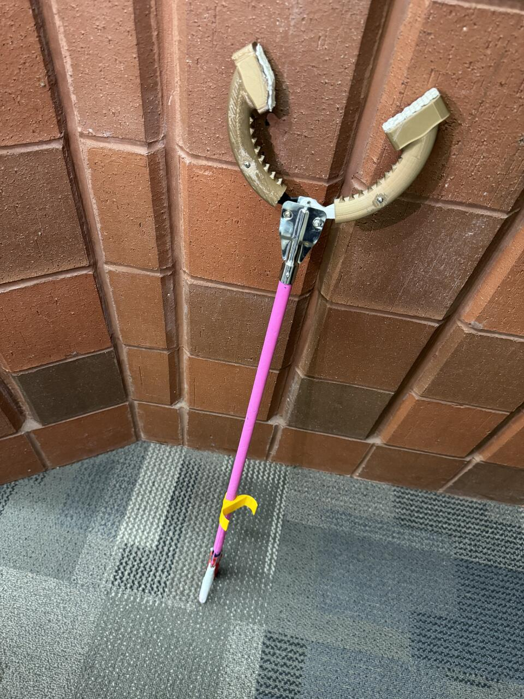

Embedded Smart Lock Puzzle
Feb 2024 – Present | Academic Project
- Programmed a Cortex ARM microcontroller in C++ to control an RFID-based solenoid lock system, enabling secure access through RFID-embedded 3D-printed figures.
- Applied principles of embedded systems, digital logic, circuit design, and hardware integration to develop a functional and interactive locking mechanism.


All Grip – Interchangeable Multi-use Reacher Grabber Head
Jan – Apr 2024 | Group Engineering Design Project
- Designed and tested an interchangeable grabber head using AutoCAD, enabling versatile use for individuals with limited mobility.
- Conducted ergonomic testing and iterative prototyping to improve grip functionality, strength, and attachment design.
- Worked collaboratively with a multidisciplinary team to meet accessibility, cost, and functionality criteria.
